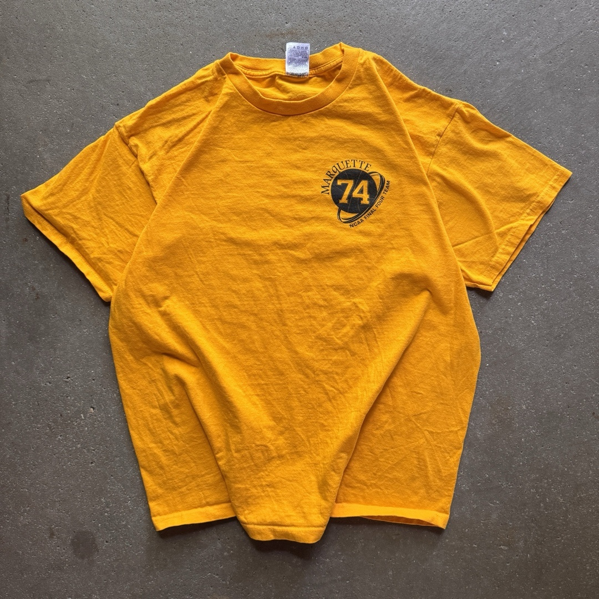

8.6%
of  listings under $15 sell in 30 days
listings under $15 sell in 30 days
secondhand
A second pair of hands for everything you'd sell, if selling weren't a second job.
Selling a $20 shirt
Consignment
You keep $3
Yourself
About $17, plus the work
8.6%
of listings under $15 sell in 30 days
Shoots
Measures
Prices
Posts

Answers
Delists

You keep about
$17
of a $20 shirt, and we do the work.
secondhand
